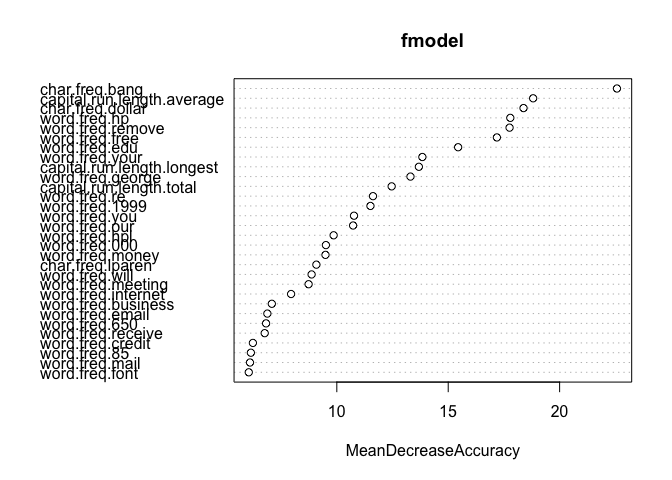
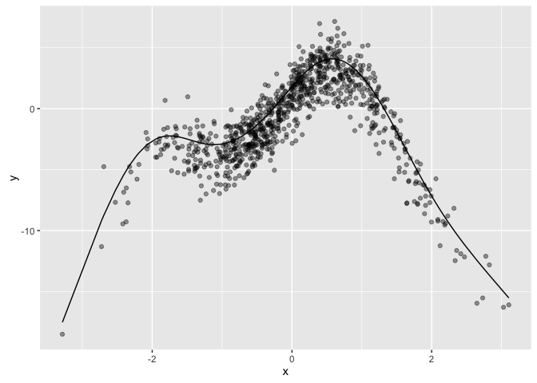
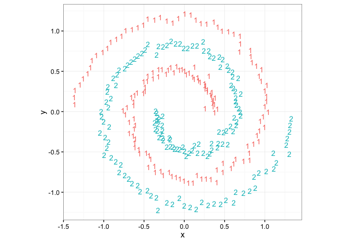
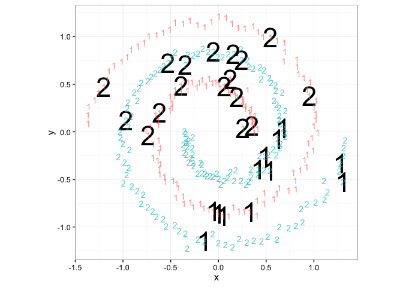

rm(list=ls())
source('runDir.R')
library('ggplot2')
runDir('../CodeExamples/c09_Exploring_advanced_methods',
'../Spambase',last=179)
[1] "############################### start 165 Fri Jun 17 10:42:20 2016"
[1] "##### running ../CodeExamples/c09_Exploring_advanced_methods/00165_example_9.1_of_section_9.1.1.R"
[1] "##### in directory ../Spambase"
> # example 9.1 of section 9.1.1
> # (example 9.1 of section 9.1.1) : Exploring advanced methods : Using bagging and random forests to reduce training variance : Using bagging to improve prediction
> # Title: Preparing Spambase data and evaluating the performance of decision trees
>
> spamD <- read.table('spamD.tsv',header=T,sep='\t') # Note: 1
> spamTrain <- subset(spamD,spamD$rgroup>=10)
> spamTest <- subset(spamD,spamD$rgroup<10)
> spamVars <- setdiff(colnames(spamD),list('rgroup','spam'))
> spamFormula <- as.formula(paste('spam=="spam"', # Note: 2
paste(spamVars,collapse=' + '),sep=' ~ '))
> loglikelihood <- function(y, py) { # Note: 3
pysmooth <- ifelse(py==0, 1e-12,
ifelse(py==1, 1-1e-12, py))
sum(y * log(pysmooth) + (1-y)*log(1 - pysmooth))
}
> accuracyMeasures <- function(pred, truth, name="model") { # Note: 4
dev.norm <- -2*loglikelihood(as.numeric(truth), pred)/length(pred) # Note: 5
ctable <- table(truth=truth,
pred=(pred>0.5)) # Note: 6
accuracy <- sum(diag(ctable))/sum(ctable)
precision <- ctable[2,2]/sum(ctable[,2])
recall <- ctable[2,2]/sum(ctable[2,])
f1 <- 2*precision*recall/(precision+recall)
data.frame(model=name, accuracy=accuracy, f1=f1, dev.norm)
}
> library(rpart) # Note: 7
> treemodel <- rpart(spamFormula, spamTrain)
> accuracyMeasures(predict(treemodel, newdata=spamTrain), # Note: 8
spamTrain$spam=="spam",
name="tree, training")
model accuracy f1 dev.norm
1 tree, training 0.9104514 0.88337 0.5618654
> accuracyMeasures(predict(treemodel, newdata=spamTest),
spamTest$spam=="spam",
name="tree, test")
model accuracy f1 dev.norm
1 tree, test 0.8799127 0.8414986 0.6702857
> # Note 1:
> # Load the data and split into training (90% of data)
> # and test (10% of data) sets.
>
> # Note 2:
> # Use all the features and do binary classification,
> # where TRUE corresponds to spam documents.
>
> # Note 3:
> # A function to calculate log likelihood (for
> # calculating deviance).
>
> # Note 4:
> # A function to calculate and return various measures
> # on the model: normalized deviance, prediction accuracy, and f1, which is the
> # harmonic mean of precision and recall.
>
> # Note 5:
> # Normalize the deviance by the number of data points
> # so that we can compare the deviance across training and test
> # sets.
>
> # Note 6:
> # Convert the class probability estimator into a
> # classifier by labeling documents that score greater than 0.5 as
> # spam.
>
> # Note 7:
> # Load the rpart library and fit a decision tree
> # model.
>
> # Note 8:
> # Evaluate the decision tree model against the
> # training and test sets.
>
[1] "############################### end 165 Fri Jun 17 10:42:20 2016"
[1] "############################### start 167 Fri Jun 17 10:42:20 2016"
[1] "##### running ../CodeExamples/c09_Exploring_advanced_methods/00167_example_9.2_of_section_9.1.1.R"
[1] "##### in directory ../Spambase"
> # example 9.2 of section 9.1.1
> # (example 9.2 of section 9.1.1) : Exploring advanced methods : Using bagging and random forests to reduce training variance : Using bagging to improve prediction
> # Title: Bagging decision trees
>
> ntrain <- dim(spamTrain)[1]
> n <- ntrain # Note: 1
> ntree <- 100
> samples <- sapply(1:ntree, # Note: 2
FUN = function(iter)
{sample(1:ntrain, size=n, replace=T)})
> treelist <-lapply(1:ntree, # Note: 3
FUN=function(iter)
{samp <- samples[,iter];
rpart(spamFormula, spamTrain[samp,])})
> predict.bag <- function(treelist, newdata) { # Note: 4
preds <- sapply(1:length(treelist),
FUN=function(iter) {
predict(treelist[[iter]], newdata=newdata)})
predsums <- rowSums(preds)
predsums/length(treelist)
}
> accuracyMeasures(predict.bag(treelist, newdata=spamTrain), # Note: 5
spamTrain$spam=="spam",
name="bagging, training")
model accuracy f1 dev.norm
1 bagging, training 0.9215544 0.8973144 0.4719576
> accuracyMeasures(predict.bag(treelist, newdata=spamTest),
spamTest$spam=="spam",
name="bagging, test")
model accuracy f1 dev.norm
1 bagging, test 0.9061135 0.8731563 0.5325537
> # Note 1:
> # Use bootstrap samples the same size as the training
> # set, with 100 trees.
>
> # Note 2:
> # Build the bootstrap samples by sampling the row indices of spamTrain with replacement. Each
> # column of the matrix samples represents the row indices into spamTrain
> # that comprise the bootstrap sample.
>
> # Note 3:
> # Train the individual decision trees and return them
> # in a list. Note: this step can take a few minutes.
>
> # Note 4:
> # predict.bag assumes the underlying classifier returns decision probabilities, not
> # decisions.
>
> # Note 5:
> # Evaluate the bagged decision trees against the
> # training and test sets.
>
[1] "############################### end 167 Fri Jun 17 10:43:03 2016"
[1] "############################### start 169 Fri Jun 17 10:43:03 2016"
[1] "##### running ../CodeExamples/c09_Exploring_advanced_methods/00169_example_9.3_of_section_9.1.2.R"
[1] "##### in directory ../Spambase"
> # example 9.3 of section 9.1.2
> # (example 9.3 of section 9.1.2) : Exploring advanced methods : Using bagging and random forests to reduce training variance : Using random forests to further improve prediction
> # Title: Using random forests
>
> library(randomForest) # Note: 1
randomForest 4.6-12
Type rfNews() to see new features/changes/bug fixes.
Attaching package: 'randomForest'
The following object is masked from 'package:ggplot2':
margin
> set.seed(5123512) # Note: 2
> fmodel <- randomForest(x=spamTrain[,spamVars], # Note: 3
y=spamTrain$spam,
ntree=100, # Note: 4
nodesize=7, # Note: 5
importance=T) # Note: 6
> accuracyMeasures(predict(fmodel, # Note: 7
newdata=spamTrain[,spamVars],type='prob')[,'spam'],
spamTrain$spam=="spam",name="random forest, train")
model accuracy f1 dev.norm
1 random forest, train 0.9884142 0.9851943 0.1428786
> ## model accuracy f1 dev.norm
> ## 1 random forest, train 0.9884142 0.9706611 0.1428786
> accuracyMeasures(predict(fmodel,
newdata=spamTest[,spamVars],type='prob')[,'spam'],
spamTest$spam=="spam",name="random forest, test")
model accuracy f1 dev.norm
1 random forest, test 0.9541485 0.9401709 0.3972416
> ## model accuracy f1 dev.norm
> ## 1 random forest, test 0.9541485 0.8845029 0.3972416
>
> # Note 1:
> # Load the randomForest package.
>
> # Note 2:
> # Set the pseudo-random seed to a known value to try
> # and make the random forest run repeatable.
>
> # Note 3:
> # Call the randomForest() function to build the model
> # with explanatory variables as x and the category to be predicted as
> # y.
>
> # Note 4:
> # Use 100 trees to be compatible with our bagging
> # example. The default is 500 trees.
>
> # Note 5:
> # Specify that each node of a tree must have a minimum
> # of 7 elements, to be compatible with the default minimum node size that rpart()
> # uses on this training set.
>
> # Note 6:
> # Tell the algorithm to save information to be used for
> # calculating variable importance (we’ll see this later).
>
> # Note 7:
> # Report the model quality.
>
[1] "############################### end 169 Fri Jun 17 10:43:08 2016"
[1] "############################### start 171 Fri Jun 17 10:43:08 2016"
[1] "##### running ../CodeExamples/c09_Exploring_advanced_methods/00171_example_9.4_of_section_9.1.2.R"
[1] "##### in directory ../Spambase"
> # example 9.4 of section 9.1.2
> # (example 9.4 of section 9.1.2) : Exploring advanced methods : Using bagging and random forests to reduce training variance : Using random forests to further improve prediction
> # Title: randomForest variable importances
>
> varImp <- importance(fmodel) # Note: 1
> varImp[1:10, ] # Note: 2
non-spam spam MeanDecreaseAccuracy
word.freq.make 2.096811 3.7304353 4.334207
word.freq.address 3.603167 3.9967031 4.977452
word.freq.all 2.799456 4.9527834 4.924958
word.freq.3d 3.000273 0.4125932 2.917972
word.freq.our 9.037946 7.9421391 10.731509
word.freq.over 5.879377 4.2402613 5.751371
word.freq.remove 16.637390 13.9331691 17.753122
word.freq.internet 7.301055 4.4458342 7.947515
word.freq.order 3.937897 4.3587883 4.866540
word.freq.mail 5.022432 3.4701224 6.103929
MeanDecreaseGini
word.freq.make 5.877954
word.freq.address 10.081640
word.freq.all 23.524720
word.freq.3d 1.550635
word.freq.our 52.569163
word.freq.over 11.820391
word.freq.remove 174.126926
word.freq.internet 22.578106
word.freq.order 11.809265
word.freq.mail 11.127200
> ## non-spam spam MeanDecreaseAccuracy
> ## word.freq.make 2.096811 3.7304353 4.334207
> ## word.freq.address 3.603167 3.9967031 4.977452
> ## word.freq.all 2.799456 4.9527834 4.924958
> ## word.freq.3d 3.000273 0.4125932 2.917972
> ## word.freq.our 9.037946 7.9421391 10.731509
> ## word.freq.over 5.879377 4.2402613 5.751371
> ## word.freq.remove 16.637390 13.9331691 17.753122
> ## word.freq.internet 7.301055 4.4458342 7.947515
> ## word.freq.order 3.937897 4.3587883 4.866540
> ## word.freq.mail 5.022432 3.4701224 6.103929
>
> varImpPlot(fmodel, type=1) # Note: 3
> # Note 1:
> # Call importance() on the spam
> # model.
>
> # Note 2:
> # The importance() function returns a matrix of
> # importance measures (larger values = more important).
>
> # Note 3:
> # Plot the variable importance as measured by
> # accuracy change.
>
[1] "############################### end 171 Fri Jun 17 10:43:08 2016"
[1] "############################### start 172 Fri Jun 17 10:43:08 2016"
[1] "##### running ../CodeExamples/c09_Exploring_advanced_methods/00172_example_9.5_of_section_9.1.2.R"
[1] "##### in directory ../Spambase"
> # example 9.5 of section 9.1.2
> # (example 9.5 of section 9.1.2) : Exploring advanced methods : Using bagging and random forests to reduce training variance : Using random forests to further improve prediction
> # Title: Fitting with fewer variables
>
> selVars <- names(sort(varImp[,1], decreasing=T))[1:25] # Note: 1
> fsel <- randomForest(x=spamTrain[,selVars],y=spamTrain$spam, # Note: 2
ntree=100,
nodesize=7,
importance=T)
> accuracyMeasures(predict(fsel,
newdata=spamTrain[,selVars],type='prob')[,'spam'],
spamTrain$spam=="spam",name="RF small, train")
model accuracy f1 dev.norm
1 RF small, train 0.9864832 0.9827267 0.1379438
> ## model accuracy f1 dev.norm
> ## 1 RF small, train 0.9876901 0.9688546 0.1506817
>
> accuracyMeasures(predict(fsel,
newdata=spamTest[,selVars],type='prob')[,'spam'],
spamTest$spam=="spam",name="RF small, test")
model accuracy f1 dev.norm
1 RF small, test 0.9497817 0.9348442 0.3985712
> ## model accuracy f1 dev.norm
> ## 1 RF small, test 0.9497817 0.8738142 0.400825
>
> # Note 1:
> # Sort the variables by their importance, as
> # measured by accuracy change.
>
> # Note 2:
> # Build a random forest model using only the 25
> # most important variables.
>
[1] "############################### end 172 Fri Jun 17 10:43:11 2016"
[1] "############################### start 175 Fri Jun 17 10:43:11 2016"
[1] "##### running ../CodeExamples/c09_Exploring_advanced_methods/00175_example_9.6_of_section_9.2.2.R"
[1] "##### in directory ../Spambase"
> # example 9.6 of section 9.2.2
> # (example 9.6 of section 9.2.2) : Exploring advanced methods : Using generalized additive models (GAMs) to learn non-monotone relationships : A one-dimensional regression example
> # Title: Preparing an artificial problem
>
> set.seed(602957)
> x <- rnorm(1000)
> noise <- rnorm(1000, sd=1.5)
> y <- 3*sin(2*x) + cos(0.75*x) - 1.5*(x^2 ) + noise
> select <- runif(1000)
> frame <- data.frame(y=y, x = x)
> train <- frame[select > 0.1,]
> test <-frame[select <= 0.1,]
[1] "############################### end 175 Fri Jun 17 10:43:11 2016"
[1] "############################### start 176 Fri Jun 17 10:43:11 2016"
[1] "##### running ../CodeExamples/c09_Exploring_advanced_methods/00176_example_9.7_of_section_9.2.2.R"
[1] "##### in directory ../Spambase"
> # example 9.7 of section 9.2.2
> # (example 9.7 of section 9.2.2) : Exploring advanced methods : Using generalized additive models (GAMs) to learn non-monotone relationships : A one-dimensional regression example
> # Title: Linear regression applied to our artificial example
>
> lin.model <- lm(y ~ x, data=train)
> summary(lin.model)
Call:
lm(formula = y ~ x, data = train)
Residuals:
Min 1Q Median 3Q Max
-17.698 -1.774 0.193 2.499 7.529
Coefficients:
Estimate Std. Error t value Pr(>|t|)
(Intercept) -0.8330 0.1161 -7.175 1.51e-12 ***
x 0.7395 0.1197 6.180 9.74e-10 ***
---
Signif. codes: 0 '***' 0.001 '**' 0.01 '*' 0.05 '.' 0.1 ' ' 1
Residual standard error: 3.485 on 899 degrees of freedom
Multiple R-squared: 0.04075, Adjusted R-squared: 0.03968
F-statistic: 38.19 on 1 and 899 DF, p-value: 9.737e-10
> ## Call:
> ## lm(formula = y ~ x, data = train)
> ##
> ## Residuals:
> ## Min 1Q Median 3Q Max
> ## -17.698 -1.774 0.193 2.499 7.529
> ##
> ## Coefficients:
> ## Estimate Std. Error t value Pr(>|t|)
> ## (Intercept) -0.8330 0.1161 -7.175 1.51e-12 ***
> ## x 0.7395 0.1197 6.180 9.74e-10 ***
> ## ---
> ## Signif. codes: 0 ‘***’ 0.001 ‘**’ 0.01 ‘*’ 0.05 ‘.’ 0.1 ‘ ’ 1
> ##
> ## Residual standard error: 3.485 on 899 degrees of freedom
> ## Multiple R-squared: 0.04075, Adjusted R-squared: 0.03968
> ## F-statistic: 38.19 on 1 and 899 DF, p-value: 9.737e-10
>
> #
> # calculate the root mean squared error (rmse)
> #
> resid.lin <- train$y-predict(lin.model)
> sqrt(mean(resid.lin^2))
[1] 3.481091
> ## [1] 3.481091
>
[1] "############################### end 176 Fri Jun 17 10:43:11 2016"
[1] "############################### start 177 Fri Jun 17 10:43:11 2016"
[1] "##### running ../CodeExamples/c09_Exploring_advanced_methods/00177_example_9.8_of_section_9.2.2.R"
[1] "##### in directory ../Spambase"
> # example 9.8 of section 9.2.2
> # (example 9.8 of section 9.2.2) : Exploring advanced methods : Using generalized additive models (GAMs) to learn non-monotone relationships : A one-dimensional regression example
> # Title: GAM applied to our artificial example
>
> library(mgcv) # Note: 1
Loading required package: nlme
This is mgcv 1.8-12. For overview type 'help("mgcv-package")'.

> glin.model <- gam(y~s(x), data=train) # Note: 2
> glin.model$converged # Note: 3
[1] TRUE
> ## [1] TRUE
>
> summary(glin.model)
Family: gaussian
Link function: identity
Formula:
y ~ s(x)
Parametric coefficients:
Estimate Std. Error t value Pr(>|t|)
(Intercept) -0.83467 0.04852 -17.2 <2e-16 ***
---
Signif. codes: 0 '***' 0.001 '**' 0.01 '*' 0.05 '.' 0.1 ' ' 1
Approximate significance of smooth terms:
edf Ref.df F p-value
s(x) 8.685 8.972 497.4 <2e-16 ***
---
Signif. codes: 0 '***' 0.001 '**' 0.01 '*' 0.05 '.' 0.1 ' ' 1
R-sq.(adj) = 0.832 Deviance explained = 83.4%
GCV = 2.144 Scale est. = 2.121 n = 901
> ## Family: gaussian # Note: 4
> ## Link function: identity
> ##
> ## Formula:
> ## y ~ s(x)
> ##
> ## Parametric coefficients: # Note: 5
> ## Estimate Std. Error t value Pr(>|t|)
> ## (Intercept) -0.83467 0.04852 -17.2 <2e-16 ***
> ## ---
> ## Signif. codes: 0 ‘***’ 0.001 ‘**’ 0.01 ‘*’ 0.05 ‘.’ 0.1 ‘ ’ 1
> ##
> ## Approximate significance of smooth terms: # Note: 6
> ## edf Ref.df F p-value
> ## s(x) 8.685 8.972 497.8 <2e-16 ***
> ## ---
> ## Signif. codes: 0 ‘***’ 0.001 ‘**’ 0.01 ‘*’ 0.05 ‘.’ 0.1 ‘ ’ 1
> ##
> ## R-sq.(adj) = 0.832 Deviance explained = 83.4% # Note: 7
> ## GCV score = 2.144 Scale est. = 2.121 n = 901
>
> #
> # calculate the root mean squared error (rmse)
> #
> resid.glin <- train$y-predict(glin.model)
> sqrt(mean(resid.glin^2))
[1] 1.448514
> ## [1] 1.448514
>
> # Note 1:
> # Load the mgcv package.
>
> # Note 2:
> # Build the model, specifying that x should be
> # treated as a nonlinear variable.
>
> # Note 3:
> # The converged parameter tells you if the algorithm
> # converged. You should only trust the output if this is TRUE.
>
> # Note 4:
> # Setting family=gaussian and link=identity tells you that the model was treated with the same
> # distributions assumptions as a standard linear regression.
>
> # Note 5:
> # The parametric coefficients are the linear terms (in this example, only the constant term).
> # This section of the summary tells you which linear terms were
> # significantly different from 0.
>
> # Note 6:
> # The smooth terms are the nonlinear terms. This section of the summary tells you which
> # nonlinear terms were significantly different from 0. It also tells you
> # the effective degrees of freedom (edf) used up to build each smooth
> # term. An edf near 1 indicates that the variable has an approximately
> # linear relationship to the output.
>
> # Note 7:
> # “R-sq (adj)” is the adjusted R-squared. “Deviance
> # explained” is the raw R-squared (0.834).
>
[1] "############################### end 177 Fri Jun 17 10:43:12 2016"
[1] "############################### start 178 Fri Jun 17 10:43:12 2016"
[1] "##### running ../CodeExamples/c09_Exploring_advanced_methods/00178_example_9.9_of_section_9.2.2.R"
[1] "##### in directory ../Spambase"
> # example 9.9 of section 9.2.2
> # (example 9.9 of section 9.2.2) : Exploring advanced methods : Using generalized additive models (GAMs) to learn non-monotone relationships : A one-dimensional regression example
> # Title: Comparing linear regression and GAM performance
>
> actual <- test$y
> pred.lin <- predict(lin.model, newdata=test) # Note: 1
> pred.glin <- predict(glin.model, newdata=test)
> resid.lin <- actual-pred.lin
> resid.glin <- actual-pred.glin
> sqrt(mean(resid.lin^2)) # Note: 2
[1] 2.792653
> ## [1] 2.792653
> sqrt(mean(resid.glin^2))
[1] 1.401399
> ## [1] 1.401399
>
> cor(actual, pred.lin)^2 # Note: 3
[1] 0.1543172
> ## [1] 0.1543172
> cor(actual, pred.glin)^2
[1] 0.7828869
> ## [1] 0.7828869
>
> # Note 1:
> # Call both models on the test
> # data.
>
> # Note 2:
> # Compare the RMSE of the linear model and the GAM
> # on the test data.
>
> # Note 3:
> # Compare the R-squared of the linear model and the
> # GAM on test data.
>
[1] "############################### end 178 Fri Jun 17 10:43:12 2016"
[1] "############################### start 179 Fri Jun 17 10:43:12 2016"
[1] "##### running ../CodeExamples/c09_Exploring_advanced_methods/00179_example_9.10_of_section_9.2.3.R"
[1] "##### in directory ../Spambase"
> # example 9.10 of section 9.2.3
> # (example 9.10 of section 9.2.3) : Exploring advanced methods : Using generalized additive models (GAMs) to learn non-monotone relationships : Extracting the nonlinear relationships
> # Title: Extracting a learned spline from a GAM
>
> sx <- predict(glin.model, type="terms")
> summary(sx)
s(x)
Min. :-17.527035
1st Qu.: -2.378636
Median : 0.009427
Mean : 0.000000
3rd Qu.: 2.869166
Max. : 4.084999
> ## s(x)
> ## Min. :-17.527035
> ## 1st Qu.: -2.378636
> ## Median : 0.009427
> ## Mean : 0.000000
> ## 3rd Qu.: 2.869166
> ## Max. : 4.084999
>
> xframe <- cbind(train, sx=sx[,1])
> ggplot(xframe, aes(x=x)) + geom_point(aes(y=y), alpha=0.4) +
geom_line(aes(y=sx))

[1] "############################### end 179 Fri Jun 17 10:43:12 2016"
rm(list=ls())
source('runDir.R')
library('ggplot2')
runDir('../CodeExamples/c09_Exploring_advanced_methods',
'../CDC',first=180,last=184)
[1] "############################### start 180 Fri Jun 17 10:43:12 2016"
[1] "##### running ../CodeExamples/c09_Exploring_advanced_methods/00180_example_9.11_of_section_9.2.4.R"
[1] "##### in directory ../CDC"
> # example 9.11 of section 9.2.4
> # (example 9.11 of section 9.2.4) : Exploring advanced methods : Using generalized additive models (GAMs) to learn non-monotone relationships : Using GAM on actual data
> # Title: Applying linear regression (with and without GAM) to health data
>
> library(mgcv)
> library(ggplot2)
> load("NatalBirthData.rData")
> train <- sdata[sdata$ORIGRANDGROUP<=5,]
> test <- sdata[sdata$ORIGRANDGROUP>5,]
> form.lin <- as.formula("DBWT ~ PWGT + WTGAIN + MAGER + UPREVIS")
> linmodel <- lm(form.lin, data=train) # Note: 1
> summary(linmodel)
Call:
lm(formula = form.lin, data = train)
Residuals:
Min 1Q Median 3Q Max
-3155.43 -272.09 45.04 349.81 2870.55
Coefficients:
Estimate Std. Error t value Pr(>|t|)
(Intercept) 2419.7090 31.9291 75.784 < 2e-16 ***
PWGT 2.1713 0.1241 17.494 < 2e-16 ***
WTGAIN 7.5773 0.3178 23.840 < 2e-16 ***
MAGER 5.3213 0.7787 6.834 8.6e-12 ***
UPREVIS 12.8753 1.1786 10.924 < 2e-16 ***
---
Signif. codes: 0 '***' 0.001 '**' 0.01 '*' 0.05 '.' 0.1 ' ' 1
Residual standard error: 562.7 on 14381 degrees of freedom
Multiple R-squared: 0.06596, Adjusted R-squared: 0.0657
F-statistic: 253.9 on 4 and 14381 DF, p-value: < 2.2e-16
> ## Call:
> ## lm(formula = form.lin, data = train)
> ##
> ## Residuals:
> ## Min 1Q Median 3Q Max
> ## -3155.43 -272.09 45.04 349.81 2870.55
> ##
> ## Coefficients:
> ## Estimate Std. Error t value Pr(>|t|)
> ## (Intercept) 2419.7090 31.9291 75.784 < 2e-16 ***
> ## PWGT 2.1713 0.1241 17.494 < 2e-16 ***
> ## WTGAIN 7.5773 0.3178 23.840 < 2e-16 ***
> ## MAGER 5.3213 0.7787 6.834 8.6e-12 ***
> ## UPREVIS 12.8753 1.1786 10.924 < 2e-16 ***
> ## ---
> ## Signif. codes: 0 ‘***’ 0.001 ‘**’ 0.01 ‘*’ 0.05 ‘.’ 0.1 ‘ ’ 1
> ##
> ## Residual standard error: 562.7 on 14381 degrees of freedom
> ## Multiple R-squared: 0.06596, Adjusted R-squared: 0.0657 # Note: 2
> ## F-statistic: 253.9 on 4 and 14381 DF, p-value: < 2.2e-16
>
> form.glin <- as.formula("DBWT ~ s(PWGT) + s(WTGAIN) +
s(MAGER) + s(UPREVIS)")
> glinmodel <- gam(form.glin, data=train) # Note: 3
> glinmodel$converged # Note: 4
[1] TRUE
> ## [1] TRUE
> summary(glinmodel)
Family: gaussian
Link function: identity
Formula:
DBWT ~ s(PWGT) + s(WTGAIN) + s(MAGER) + s(UPREVIS)
Parametric coefficients:
Estimate Std. Error t value Pr(>|t|)
(Intercept) 3276.948 4.623 708.8 <2e-16 ***
---
Signif. codes: 0 '***' 0.001 '**' 0.01 '*' 0.05 '.' 0.1 ' ' 1
Approximate significance of smooth terms:
edf Ref.df F p-value
s(PWGT) 5.374 6.443 69.010 < 2e-16 ***
s(WTGAIN) 4.719 5.743 102.313 < 2e-16 ***
s(MAGER) 7.742 8.428 7.145 1.37e-09 ***
s(UPREVIS) 5.491 6.425 48.423 < 2e-16 ***
---
Signif. codes: 0 '***' 0.001 '**' 0.01 '*' 0.05 '.' 0.1 ' ' 1
R-sq.(adj) = 0.0927 Deviance explained = 9.42%
GCV = 3.0804e+05 Scale est. = 3.0752e+05 n = 14386
> ## Family: gaussian
> ## Link function: identity
> ##
> ## Formula:
> ## DBWT ~ s(PWGT) + s(WTGAIN) + s(MAGER) + s(UPREVIS)
> ##
> ## Parametric coefficients:
> ## Estimate Std. Error t value Pr(>|t|)
> ## (Intercept) 3276.948 4.623 708.8 <2e-16 ***
> ## ---
> ## Signif. codes: 0 ‘***’ 0.001 ‘**’ 0.01 ‘*’ 0.05 ‘.’ 0.1 ‘ ’ 1
> ##
> ## Approximate significance of smooth terms:
> ## edf Ref.df F p-value
> ## s(PWGT) 5.374 6.443 68.981 < 2e-16 ***
> ## s(WTGAIN) 4.719 5.743 102.313 < 2e-16 ***
> ## s(MAGER) 7.742 8.428 6.959 1.82e-09 ***
> ## s(UPREVIS) 5.491 6.425 48.423 < 2e-16 ***
> ## ---
> ## Signif. codes: 0 ‘***’ 0.001 ‘**’ 0.01 ‘*’ 0.05 ‘.’ 0.1 ‘ ’ 1
> ##
> ## R-sq.(adj) = 0.0927 Deviance explained = 9.42% # Note: 5
> ## GCV score = 3.0804e+05 Scale est. = 3.0752e+05 n = 14386
>
> # Note 1:
> # Build a linear model with four
> # variables.
>
> # Note 2:
> # The model explains about 7% of the variance; all
> # coefficients are significantly different from 0.
>
> # Note 3:
> # Build a GAM with the same
> # variables.
>
> # Note 4:
> # Verify that the model has
> # converged.
>
> # Note 5:
> # The model explains just under 10% of the variance;
> # all variables have a nonlinear effect significantly different from
> # 0.
>
[1] "############################### end 180 Fri Jun 17 10:43:13 2016"
[1] "############################### start 181 Fri Jun 17 10:43:13 2016"
[1] "##### running ../CodeExamples/c09_Exploring_advanced_methods/00181_example_9.12_of_section_9.2.4.R"
[1] "##### in directory ../CDC"
> # example 9.12 of section 9.2.4
> # (example 9.12 of section 9.2.4) : Exploring advanced methods : Using generalized additive models (GAMs) to learn non-monotone relationships : Using GAM on actual data
> # Title: Plotting GAM results
>
> terms <- predict(glinmodel, type="terms") # Note: 1
> tframe <- cbind(DBWT = train$DBWT, as.data.frame(terms)) # Note: 2
> colnames(tframe) <- gsub('[()]', '', colnames(tframe)) # Note: 3
> pframe <- cbind(tframe, train[,c("PWGT", "WTGAIN",
"MAGER", "UPREVIS")]) # Note: 4
> p1 <- ggplot(pframe, aes(x=PWGT)) +
geom_point(aes(y=scale(sPWGT, scale=F))) + # Note: 5
geom_smooth(aes(y=scale(DBWT, scale=F))) # + # Note: 6
> # [...] # Note: 7
>
> # Note 1:
> # Get the matrix of s()
> # functions.
>
> # Note 2:
> # Bind in birth weight; convert to data
> # frame.
>
> # Note 3:
> # Make the column names reference-friendly
> # (“s(PWGT)” is converted to “sPWGT”, etc.).
>
> # Note 4:
> # Bind in the input variables.
>
> # Note 5:
> # Plot s(PWGT) shifted to be zero mean versus PWGT (mother’s weight) as points.
>
> # Note 6:
> # Plot the smoothing curve of DWBT (birth weight) shifted to be zero mean versus PWGT (mother’s
> # weight).
>
> # Note 7:
> # Repeat for remaining variables (omitted for
> # brevity).
>
[1] "############################### end 181 Fri Jun 17 10:43:13 2016"
[1] "############################### start 182 Fri Jun 17 10:43:13 2016"
[1] "##### running ../CodeExamples/c09_Exploring_advanced_methods/00182_example_9.13_of_section_9.2.4.R"
[1] "##### in directory ../CDC"
> # example 9.13 of section 9.2.4
> # (example 9.13 of section 9.2.4) : Exploring advanced methods : Using generalized additive models (GAMs) to learn non-monotone relationships : Using GAM on actual data
> # Title: Checking GAM model performance on hold-out data
>
> pred.lin <- predict(linmodel, newdata=test) # Note: 1
> pred.glin <- predict(glinmodel, newdata=test)
> cor(pred.lin, test$DBWT)^2 # Note: 2
[1] 0.0616812
> # [1] 0.0616812
> cor(pred.glin, test$DBWT)^2
[1] 0.08857426
> # [1] 0.08857426
>
> # Note 1:
> # Run both the linear model and the GAM on the test
> # data.
>
> # Note 2:
> # Calculate R-squared for both
> # models.
>
[1] "############################### end 182 Fri Jun 17 10:43:13 2016"
[1] "############################### start 183 Fri Jun 17 10:43:13 2016"
[1] "##### running ../CodeExamples/c09_Exploring_advanced_methods/00183_example_9.14_of_section_9.2.5.R"
[1] "##### in directory ../CDC"
> # example 9.14 of section 9.2.5
> # (example 9.14 of section 9.2.5) : Exploring advanced methods : Using generalized additive models (GAMs) to learn non-monotone relationships : Using GAM for logistic regression
> # Title: GLM logistic regression
>
> form <- as.formula("DBWT < 2000 ~ PWGT + WTGAIN + MAGER + UPREVIS")
> logmod <- glm(form, data=train, family=binomial(link="logit"))
[1] "############################### end 183 Fri Jun 17 10:43:14 2016"
[1] "############################### start 184 Fri Jun 17 10:43:14 2016"
[1] "##### running ../CodeExamples/c09_Exploring_advanced_methods/00184_example_9.15_of_section_9.2.5.R"
[1] "##### in directory ../CDC"
> # example 9.15 of section 9.2.5
> # (example 9.15 of section 9.2.5) : Exploring advanced methods : Using generalized additive models (GAMs) to learn non-monotone relationships : Using GAM for logistic regression
> # Title: GAM logistic regression
>
> form2 <- as.formula("DBWT<2000~s(PWGT)+s(WTGAIN)+
s(MAGER)+s(UPREVIS)")
> glogmod <- gam(form2, data=train, family=binomial(link="logit"))
> glogmod$converged
[1] TRUE
> ## [1] TRUE
>
> summary(glogmod)
Family: binomial
Link function: logit
Formula:
DBWT < 2000 ~ s(PWGT) + s(WTGAIN) + s(MAGER) + s(UPREVIS)
Parametric coefficients:
Estimate Std. Error z value Pr(>|z|)
(Intercept) -3.94085 0.06794 -58 <2e-16 ***
---
Signif. codes: 0 '***' 0.001 '**' 0.01 '*' 0.05 '.' 0.1 ' ' 1
Approximate significance of smooth terms:
edf Ref.df Chi.sq p-value
s(PWGT) 1.905 2.420 2.463 0.39023
s(WTGAIN) 3.674 4.543 64.211 1.81e-12 ***
s(MAGER) 1.003 1.005 8.347 0.00393 **
s(UPREVIS) 6.802 7.216 217.631 < 2e-16 ***
---
Signif. codes: 0 '***' 0.001 '**' 0.01 '*' 0.05 '.' 0.1 ' ' 1
R-sq.(adj) = 0.0331 Deviance explained = 9.14%
UBRE = -0.76987 Scale est. = 1 n = 14386
> ## Family: binomial
> ## Link function: logit
> ##
> ## Formula:
> ## DBWT < 2000 ~ s(PWGT) + s(WTGAIN) + s(MAGER) + s(UPREVIS)
> ##
> ## Parametric coefficients:
> ## Estimate Std. Error z value Pr(>|z|)
> ## (Intercept) -3.94085 0.06794 -58 <2e-16 ***
> ## ---
> ## Signif. codes: 0 ‘***’ 0.001 ‘**’ 0.01 ‘*’ 0.05 ‘.’ 0.1 ‘ ’ 1
> ##
> ## Approximate significance of smooth terms:
> ## edf Ref.df Chi.sq p-value
> ## s(PWGT) 1.905 2.420 2.463 0.36412 # Note: 1
> ## s(WTGAIN) 3.674 4.543 64.426 1.72e-12 ***
> ## s(MAGER) 1.003 1.005 8.335 0.00394 **
> ## s(UPREVIS) 6.802 7.216 217.631 < 2e-16 ***
> ## ---
> ## Signif. codes: 0 ‘***’ 0.001 ‘**’ 0.01 ‘*’ 0.05 ‘.’ 0.1 ‘ ’ 1
> ##
> ## R-sq.(adj) = 0.0331 Deviance explained = 9.14% # Note: 2
> ## UBRE score = -0.76987 Scale est. = 1 n = 14386
>
> # Note 1:
> # Note that there’s no proof that the mother’s weight (PWGT) has a significant effect on
> # outcome.
>
> # Note 2:
> # “Deviance explained” is the pseudo R-squared: 1 -
> # (deviance/null.deviance).
>
[1] "############################### end 184 Fri Jun 17 10:43:17 2016"
rm(list=ls())
source('runDir.R')
library('ggplot2')
load('../PUMS/psub.RData')
runDir('../CodeExamples/c09_Exploring_advanced_methods',
'../PUMS',first=185,last=195)
[1] "############################### start 185 Fri Jun 17 10:43:17 2016"
[1] "##### running ../CodeExamples/c09_Exploring_advanced_methods/00185_example_9.16_of_section_9.3.1.R"
[1] "##### in directory ../PUMS"
> # example 9.16 of section 9.3.1
> # (example 9.16 of section 9.3.1) : Exploring advanced methods : Using kernel methods to increase data separation : Understanding kernel functions
> # Title: An artificial kernel example
>
> u <- c(1,2)
> v <- c(3,4)
> k <- function(u,v) { # Note: 1
u[1]*v[1] + u[2]*v[2] +
u[1]*u[1]*v[1]*v[1] + u[2]*u[2]*v[2]*v[2] +
u[1]*u[2]*v[1]*v[2]
}
> phi <- function(x) { # Note: 2
x <- as.numeric(x)
c(x,x*x,combn(x,2,FUN=prod))
}
> print(k(u,v)) # Note: 3
[1] 108
> ## [1] 108
> print(phi(u))
[1] 1 2 1 4 2
> ## [1] 1 2 1 4 2
> print(phi(v))
[1] 3 4 9 16 12
> ## [1] 3 4 9 16 12
> print(as.numeric(phi(u) %*% phi(v))) # Note: 4
[1] 108
> ## [1] 108
>
> # Note 1:
> # Define a function of two vector variables
> # (both two dimensional) as the sum of various products of terms.
>
> # Note 2:
> # Define a function of a single vector variable
> # that returns a vector containing the original entries plus all products of
> # entries.
>
> # Note 3:
> # Example evaluation of k(,).
>
> # Note 4:
> # Confirm phi() agrees with k(,). phi() is the certificate that shows k(,) is in fact a
> # kernel.
>
[1] "############################### end 185 Fri Jun 17 10:43:17 2016"
[1] "############################### start 186 Fri Jun 17 10:43:17 2016"
[1] "##### running ../CodeExamples/c09_Exploring_advanced_methods/00186_example_9.17_of_section_9.3.2.R"
[1] "##### in directory ../PUMS"
> # example 9.17 of section 9.3.2
> # (example 9.17 of section 9.3.2) : Exploring advanced methods : Using kernel methods to increase data separation : Using an explicit kernel on a problem
> # Title: Applying stepwise linear regression to PUMS data
>
> dtrain <- subset(psub,ORIGRANDGROUP >= 500)
> dtest <- subset(psub,ORIGRANDGROUP < 500) # Note: 1
> m1 <- step( # Note: 2
lm(log(PINCP,base=10) ~ AGEP + SEX + COW + SCHL,
data=dtrain), # Note: 3
direction='both')
Start: AIC=-1545.52
log(PINCP, base = 10) ~ AGEP + SEX + COW + SCHL
Df Sum of Sq RSS AIC
<none> 41.842 -1545.5
- COW 6 1.1304 42.973 -1541.7
- SEX 1 1.1462 42.989 -1531.4
- AGEP 1 5.4363 47.279 -1474.8
- SCHL 8 14.0776 55.920 -1389.0
> rmse <- function(y, f) { sqrt(mean( (y-f)^2 )) } # Note: 4
> print(rmse(log(dtest$PINCP,base=10),
predict(m1,newdata=dtest))) # Note: 5
[1] 0.2752171
> # [1] 0.2752171
>
> # Note 1:
> # Split data into test and training.
>
> # Note 2:
> # Ask that the linear regression model we’re building be
> # stepwise improved, which is a powerful automated procedure for
> # removing variables that don’t seem to have significant impacts
> # (can improve generalization performance).
>
> # Note 3:
> # Build the basic linear regression model.
>
> # Note 4:
> # Define the RMSE function.
>
> # Note 5:
> # Calculate the RMSE between the prediction and the
> # actuals.
>
[1] "############################### end 186 Fri Jun 17 10:43:17 2016"
[1] "############################### start 187 Fri Jun 17 10:43:17 2016"
[1] "##### running ../CodeExamples/c09_Exploring_advanced_methods/00187_example_9.18_of_section_9.3.2.R"
[1] "##### in directory ../PUMS"
> # example 9.18 of section 9.3.2
> # (example 9.18 of section 9.3.2) : Exploring advanced methods : Using kernel methods to increase data separation : Using an explicit kernel on a problem
> # Title: Applying an example explicit kernel transform
>
> phi <- function(x) { # Note: 1
x <- as.numeric(x)
c(x,x*x,combn(x,2,FUN=prod))
}
> phiNames <- function(n) { # Note: 2
c(n,paste(n,n,sep=':'),
combn(n,2,FUN=function(x) {paste(x,collapse=':')}))
}
> modelMatrix <- model.matrix(~ 0 + AGEP + SEX + COW + SCHL,psub) # Note: 3
> colnames(modelMatrix) <- gsub('[^a-zA-Z0-9]+','_',
colnames(modelMatrix)) # Note: 4
> pM <- t(apply(modelMatrix,1,phi)) # Note: 5
> vars <- phiNames(colnames(modelMatrix))
> vars <- gsub('[^a-zA-Z0-9]+','_',vars)
> colnames(pM) <- vars # Note: 6
> pM <- as.data.frame(pM)
> pM$PINCP <- psub$PINCP
> pM$ORIGRANDGROUP <- psub$ORIGRANDGROUP
> pMtrain <- subset(pM,ORIGRANDGROUP >= 500)
> pMtest <- subset(pM,ORIGRANDGROUP < 500) # Note: 7
> # Note 1:
> # Define our primal kernel function: map a
> # vector to a copy of itself plus all square terms and cross-multiplied
> # terms.
>
> # Note 2:
> # Define a function similar to our primal
> # kernel, but working on variable names instead of values.
>
> # Note 3:
> # Convert data to a matrix where all
> # categorical variables are encoded as multiple numeric indicators.
>
> # Note 4:
> # Remove problematic characters from matrix
> # column names.
>
> # Note 5:
> # Apply the primal kernel function to every
> # row of the matrix and transpose results so they’re written as rows (not as a
> # list as returned by apply()).
>
> # Note 6:
> # Extend names from original matrix to
> # names for compound variables in new matrix.
>
> # Note 7:
> # Add in outcomes, test/train split
> # columns, and prepare new data for modeling.
>
[1] "############################### end 187 Fri Jun 17 10:43:17 2016"
[1] "############################### start 188 Fri Jun 17 10:43:17 2016"
[1] "##### running ../CodeExamples/c09_Exploring_advanced_methods/00188_example_9.19_of_section_9.3.2.R"
[1] "##### in directory ../PUMS"
> # example 9.19 of section 9.3.2
> # (example 9.19 of section 9.3.2) : Exploring advanced methods : Using kernel methods to increase data separation : Using an explicit kernel on a problem
> # Title: Modeling using the explicit kernel transform
>
> formulaStr2 <- paste('log(PINCP,base=10)',
paste(vars,collapse=' + '),
sep=' ~ ')
> m2 <- lm(as.formula(formulaStr2),data=pMtrain)
> coef2 <- summary(m2)$coefficients
> interestingVars <- setdiff(rownames(coef2)[coef2[,'Pr(>|t|)']<0.01],
'(Intercept)')
> interestingVars <- union(colnames(modelMatrix),interestingVars) # Note: 1
> formulaStr3 <- paste('log(PINCP,base=10)',
paste(interestingVars,collapse=' + '),
sep=' ~ ')
> m3 <- step(lm(as.formula(formulaStr3),data=pMtrain),direction='both') # Note: 2
Start: AIC=-1563.28
log(PINCP, base = 10) ~ AGEP + SEXM + SEXF + COWFederal_government_employee +
COWLocal_government_employee + COWPrivate_not_for_profit_employee +
COWSelf_employed_incorporated + COWSelf_employed_not_incorporated +
COWState_government_employee + SCHLAssociate_s_degree + SCHLBachelor_s_degree +
SCHLDoctorate_degree + SCHLGED_or_alternative_credential +
SCHLMaster_s_degree + SCHLProfessional_degree + SCHLRegular_high_school_diploma +
SCHLsome_college_credit_no_degree + AGEP_AGEP
Step: AIC=-1563.28
log(PINCP, base = 10) ~ AGEP + SEXM + COWFederal_government_employee +
COWLocal_government_employee + COWPrivate_not_for_profit_employee +
COWSelf_employed_incorporated + COWSelf_employed_not_incorporated +
COWState_government_employee + SCHLAssociate_s_degree + SCHLBachelor_s_degree +
SCHLDoctorate_degree + SCHLGED_or_alternative_credential +
SCHLMaster_s_degree + SCHLProfessional_degree + SCHLRegular_high_school_diploma +
SCHLsome_college_credit_no_degree + AGEP_AGEP
Df Sum of Sq RSS AIC
- COWFederal_government_employee 1 0.0529 40.528 -1564.5
- COWLocal_government_employee 1 0.0556 40.531 -1564.5
- COWSelf_employed_not_incorporated 1 0.0580 40.533 -1564.4
- COWSelf_employed_incorporated 1 0.0739 40.549 -1564.2
<none> 40.475 -1563.3
- COWState_government_employee 1 0.1454 40.621 -1563.2
- SCHLGED_or_alternative_credential 1 0.2038 40.679 -1562.3
- SCHLDoctorate_degree 1 0.2976 40.773 -1560.9
- SCHLRegular_high_school_diploma 1 0.4088 40.884 -1559.3
- COWPrivate_not_for_profit_employee 1 0.7791 41.255 -1553.9
- SEXM 1 1.0356 41.511 -1550.2
- SCHLsome_college_credit_no_degree 1 1.0598 41.535 -1549.9
- AGEP_AGEP 1 1.3669 41.842 -1545.5
- SCHLAssociate_s_degree 1 1.4120 41.887 -1544.9
- AGEP 1 1.9901 42.466 -1536.7
- SCHLProfessional_degree 1 4.1591 44.635 -1507.1
- SCHLBachelor_s_degree 1 5.8785 46.354 -1484.6
- SCHLMaster_s_degree 1 6.0262 46.502 -1482.7
Step: AIC=-1564.5
log(PINCP, base = 10) ~ AGEP + SEXM + COWLocal_government_employee +
COWPrivate_not_for_profit_employee + COWSelf_employed_incorporated +
COWSelf_employed_not_incorporated + COWState_government_employee +
SCHLAssociate_s_degree + SCHLBachelor_s_degree + SCHLDoctorate_degree +
SCHLGED_or_alternative_credential + SCHLMaster_s_degree +
SCHLProfessional_degree + SCHLRegular_high_school_diploma +
SCHLsome_college_credit_no_degree + AGEP_AGEP
Df Sum of Sq RSS AIC
- COWSelf_employed_not_incorporated 1 0.0621 40.590 -1565.6
- COWLocal_government_employee 1 0.0628 40.591 -1565.6
- COWSelf_employed_incorporated 1 0.0810 40.609 -1565.3
<none> 40.528 -1564.5
- COWState_government_employee 1 0.1566 40.685 -1564.2
- SCHLGED_or_alternative_credential 1 0.2157 40.744 -1563.3
+ COWFederal_government_employee 1 0.0529 40.475 -1563.3
- SCHLDoctorate_degree 1 0.2989 40.827 -1562.1
- SCHLRegular_high_school_diploma 1 0.4193 40.948 -1560.4
- COWPrivate_not_for_profit_employee 1 0.8172 41.345 -1554.6
- SEXM 1 1.0873 41.616 -1550.8
- SCHLsome_college_credit_no_degree 1 1.0992 41.628 -1550.6
- AGEP_AGEP 1 1.3837 41.912 -1546.5
- SCHLAssociate_s_degree 1 1.4720 42.000 -1545.3
- AGEP 1 2.0110 42.539 -1537.7
- SCHLProfessional_degree 1 4.2486 44.777 -1507.2
- SCHLBachelor_s_degree 1 6.0593 46.588 -1483.6
- SCHLMaster_s_degree 1 6.1231 46.651 -1482.8
Step: AIC=-1565.59
log(PINCP, base = 10) ~ AGEP + SEXM + COWLocal_government_employee +
COWPrivate_not_for_profit_employee + COWSelf_employed_incorporated +
COWState_government_employee + SCHLAssociate_s_degree + SCHLBachelor_s_degree +
SCHLDoctorate_degree + SCHLGED_or_alternative_credential +
SCHLMaster_s_degree + SCHLProfessional_degree + SCHLRegular_high_school_diploma +
SCHLsome_college_credit_no_degree + AGEP_AGEP
Df Sum of Sq RSS AIC
- COWLocal_government_employee 1 0.0580 40.648 -1566.7
- COWSelf_employed_incorporated 1 0.0767 40.667 -1566.5
<none> 40.590 -1565.6
- COWState_government_employee 1 0.1487 40.739 -1565.4
+ COWSelf_employed_not_incorporated 1 0.0621 40.528 -1564.5
+ COWFederal_government_employee 1 0.0570 40.533 -1564.4
- SCHLGED_or_alternative_credential 1 0.2345 40.825 -1564.2
- SCHLDoctorate_degree 1 0.3092 40.900 -1563.1
- SCHLRegular_high_school_diploma 1 0.4556 41.046 -1561.0
- COWPrivate_not_for_profit_employee 1 0.7940 41.384 -1556.1
- SEXM 1 1.0830 41.673 -1551.9
- SCHLsome_college_credit_no_degree 1 1.1667 41.757 -1550.7
- AGEP_AGEP 1 1.3816 41.972 -1547.7
- SCHLAssociate_s_degree 1 1.5088 42.099 -1545.9
- AGEP 1 2.0030 42.593 -1538.9
- SCHLProfessional_degree 1 4.3220 44.912 -1507.4
- SCHLBachelor_s_degree 1 6.1755 46.766 -1483.3
- SCHLMaster_s_degree 1 6.3180 46.908 -1481.5
Step: AIC=-1566.74
log(PINCP, base = 10) ~ AGEP + SEXM + COWPrivate_not_for_profit_employee +
COWSelf_employed_incorporated + COWState_government_employee +
SCHLAssociate_s_degree + SCHLBachelor_s_degree + SCHLDoctorate_degree +
SCHLGED_or_alternative_credential + SCHLMaster_s_degree +
SCHLProfessional_degree + SCHLRegular_high_school_diploma +
SCHLsome_college_credit_no_degree + AGEP_AGEP
Df Sum of Sq RSS AIC
- COWSelf_employed_incorporated 1 0.0705 40.719 -1567.7
- COWState_government_employee 1 0.1297 40.778 -1566.8
<none> 40.648 -1566.7
+ COWFederal_government_employee 1 0.0640 40.584 -1565.7
+ COWLocal_government_employee 1 0.0580 40.590 -1565.6
+ COWSelf_employed_not_incorporated 1 0.0573 40.591 -1565.6
- SCHLGED_or_alternative_credential 1 0.2366 40.885 -1565.3
- SCHLDoctorate_degree 1 0.2875 40.936 -1564.5
- SCHLRegular_high_school_diploma 1 0.4549 41.103 -1562.1
- COWPrivate_not_for_profit_employee 1 0.7562 41.405 -1557.8
- SCHLsome_college_credit_no_degree 1 1.1621 41.811 -1552.0
- SEXM 1 1.2186 41.867 -1551.2
- AGEP_AGEP 1 1.3635 42.012 -1549.1
- SCHLAssociate_s_degree 1 1.5080 42.156 -1547.1
- AGEP 1 1.9797 42.628 -1540.5
- SCHLProfessional_degree 1 4.2647 44.913 -1509.4
- SCHLBachelor_s_degree 1 6.1175 46.766 -1485.3
- SCHLMaster_s_degree 1 6.3301 46.979 -1482.6
Step: AIC=-1567.71
log(PINCP, base = 10) ~ AGEP + SEXM + COWPrivate_not_for_profit_employee +
COWState_government_employee + SCHLAssociate_s_degree + SCHLBachelor_s_degree +
SCHLDoctorate_degree + SCHLGED_or_alternative_credential +
SCHLMaster_s_degree + SCHLProfessional_degree + SCHLRegular_high_school_diploma +
SCHLsome_college_credit_no_degree + AGEP_AGEP
Df Sum of Sq RSS AIC
- COWState_government_employee 1 0.1237 40.843 -1567.9
<none> 40.719 -1567.7
+ COWFederal_government_employee 1 0.0707 40.648 -1566.8
+ COWSelf_employed_incorporated 1 0.0705 40.648 -1566.7
+ COWSelf_employed_not_incorporated 1 0.0536 40.665 -1566.5
+ COWLocal_government_employee 1 0.0518 40.667 -1566.5
- SCHLGED_or_alternative_credential 1 0.2360 40.955 -1566.3
- SCHLDoctorate_degree 1 0.2886 41.008 -1565.5
- SCHLRegular_high_school_diploma 1 0.4276 41.146 -1563.5
- COWPrivate_not_for_profit_employee 1 0.7274 41.446 -1559.2
- SCHLsome_college_credit_no_degree 1 1.1306 41.850 -1553.4
- SEXM 1 1.1717 41.891 -1552.8
- AGEP_AGEP 1 1.3736 42.093 -1550.0
- SCHLAssociate_s_degree 1 1.4994 42.218 -1548.2
- AGEP 1 1.9842 42.703 -1541.4
- SCHLProfessional_degree 1 4.1942 44.913 -1511.4
- SCHLBachelor_s_degree 1 6.0696 46.789 -1487.0
- SCHLMaster_s_degree 1 6.2770 46.996 -1484.4
Step: AIC=-1567.91
log(PINCP, base = 10) ~ AGEP + SEXM + COWPrivate_not_for_profit_employee +
SCHLAssociate_s_degree + SCHLBachelor_s_degree + SCHLDoctorate_degree +
SCHLGED_or_alternative_credential + SCHLMaster_s_degree +
SCHLProfessional_degree + SCHLRegular_high_school_diploma +
SCHLsome_college_credit_no_degree + AGEP_AGEP
Df Sum of Sq RSS AIC
<none> 40.843 -1567.9
+ COWState_government_employee 1 0.1237 40.719 -1567.7
+ COWFederal_government_employee 1 0.0801 40.763 -1567.1
+ COWSelf_employed_incorporated 1 0.0644 40.778 -1566.8
+ COWSelf_employed_not_incorporated 1 0.0477 40.795 -1566.6
- SCHLGED_or_alternative_credential 1 0.2357 41.078 -1566.5
+ COWLocal_government_employee 1 0.0347 40.808 -1566.4
- SCHLDoctorate_degree 1 0.2901 41.133 -1565.7
- SCHLRegular_high_school_diploma 1 0.4194 41.262 -1563.8
- COWPrivate_not_for_profit_employee 1 0.6860 41.529 -1560.0
- SCHLsome_college_credit_no_degree 1 1.1101 41.953 -1554.0
- SEXM 1 1.2198 42.062 -1552.4
- AGEP_AGEP 1 1.3760 42.219 -1550.2
- SCHLAssociate_s_degree 1 1.4515 42.294 -1549.1
- AGEP 1 1.9805 42.823 -1541.7
- SCHLProfessional_degree 1 4.1851 45.028 -1511.9
- SCHLBachelor_s_degree 1 5.9520 46.795 -1489.0
- SCHLMaster_s_degree 1 6.1704 47.013 -1486.2
> print(rmse(log(pMtest$PINCP,base=10),predict(m3,newdata=pMtest))) # Note: 3
[1] 0.2735955
> # [1] 0.2735955
>
> # Note 1:
> # Select a set of interesting variables by building an initial model using all of the new
> # variables and retaining an interesting subset. This is an ad hoc
> # move to speed up the stepwise regression by trying to quickly
> # dispose of many useless derived variables. By introducing many new
> # variables, the primal kernel method also introduces many new degrees
> # of freedom, which can invite overfitting.
>
> # Note 2:
> # Stepwise regress on subset of variables to
> # get new model.
>
> # Note 3:
> # Calculate the RMSE between the prediction and the actuals.
>
[1] "############################### end 188 Fri Jun 17 10:43:17 2016"
[1] "############################### start 189 Fri Jun 17 10:43:17 2016"
[1] "##### running ../CodeExamples/c09_Exploring_advanced_methods/00189_example_9.20_of_section_9.3.2.R"
[1] "##### in directory ../PUMS"
> # example 9.20 of section 9.3.2
> # (example 9.20 of section 9.3.2) : Exploring advanced methods : Using kernel methods to increase data separation : Using an explicit kernel on a problem
> # Title: Inspecting the results of the explicit kernel model
>
> print(summary(m3))
Call:
lm(formula = log(PINCP, base = 10) ~ AGEP + SEXM + COWPrivate_not_for_profit_employee +
SCHLAssociate_s_degree + SCHLBachelor_s_degree + SCHLDoctorate_degree +
SCHLGED_or_alternative_credential + SCHLMaster_s_degree +
SCHLProfessional_degree + SCHLRegular_high_school_diploma +
SCHLsome_college_credit_no_degree + AGEP_AGEP, data = pMtrain)
Residuals:
Min 1Q Median 3Q Max
-1.29264 -0.14925 0.01343 0.17021 0.61968
Coefficients:
Estimate Std. Error t value Pr(>|t|)
(Intercept) 2.9400460 0.2219310 13.248 < 2e-16
AGEP 0.0663537 0.0124905 5.312 1.54e-07
SEXM 0.0934876 0.0224236 4.169 3.52e-05
COWPrivate_not_for_profit_employee -0.1187914 0.0379944 -3.127 0.00186
SCHLAssociate_s_degree 0.2317211 0.0509509 4.548 6.60e-06
SCHLBachelor_s_degree 0.3844459 0.0417445 9.210 < 2e-16
SCHLDoctorate_degree 0.3190572 0.1569356 2.033 0.04250
SCHLGED_or_alternative_credential 0.1405157 0.0766743 1.833 0.06737
SCHLMaster_s_degree 0.4553550 0.0485609 9.377 < 2e-16
SCHLProfessional_degree 0.6525921 0.0845052 7.723 5.01e-14
SCHLRegular_high_school_diploma 0.1016590 0.0415834 2.445 0.01479
SCHLsome_college_credit_no_degree 0.1655906 0.0416345 3.977 7.85e-05
AGEP_AGEP -0.0007547 0.0001704 -4.428 1.14e-05
(Intercept) ***
AGEP ***
SEXM ***
COWPrivate_not_for_profit_employee **
SCHLAssociate_s_degree ***
SCHLBachelor_s_degree ***
SCHLDoctorate_degree *
SCHLGED_or_alternative_credential .
SCHLMaster_s_degree ***
SCHLProfessional_degree ***
SCHLRegular_high_school_diploma *
SCHLsome_college_credit_no_degree ***
AGEP_AGEP ***
---
Signif. codes: 0 '***' 0.001 '**' 0.01 '*' 0.05 '.' 0.1 ' ' 1
Residual standard error: 0.2649 on 582 degrees of freedom
Multiple R-squared: 0.3541, Adjusted R-squared: 0.3408
F-statistic: 26.59 on 12 and 582 DF, p-value: < 2.2e-16
> ## Call:
> ## lm(formula = log(PINCP, base = 10) ~ AGEP + SEXM +
> ## COWPrivate_not_for_profit_employee +
> ## SCHLAssociate_s_degree + SCHLBachelor_s_degree +
> ## SCHLDoctorate_degree +
> ## SCHLGED_or_alternative_credential + SCHLMaster_s_degree +
> ## SCHLProfessional_degree + SCHLRegular_high_school_diploma +
> ## SCHLsome_college_credit_no_degree + AGEP_AGEP, data = pMtrain)
> ##
> ## Residuals:
> ## Min 1Q Median 3Q Max
> ## -1.29264 -0.14925 0.01343 0.17021 0.61968
> ##
> ## Coefficients:
> ## Estimate Std. Error t value Pr(>|t|)
> ## (Intercept) 2.9400460 0.2219310 13.248 < 2e-16 ***
> ## AGEP 0.0663537 0.0124905 5.312 1.54e-07 ***
> ## SEXM 0.0934876 0.0224236 4.169 3.52e-05 ***
> ## COWPrivate_not_for_profit_em -0.1187914 0.0379944 -3.127 0.00186 **
> ## SCHLAssociate_s_degree 0.2317211 0.0509509 4.548 6.60e-06 ***
> ## SCHLBachelor_s_degree 0.3844459 0.0417445 9.210 < 2e-16 ***
> ## SCHLDoctorate_degree 0.3190572 0.1569356 2.033 0.04250 *
> ## SCHLGED_or_alternative_creden 0.1405157 0.0766743 1.833 0.06737 .
> ## SCHLMaster_s_degree 0.4553550 0.0485609 9.377 < 2e-16 ***
> ## SCHLProfessional_degree 0.6525921 0.0845052 7.723 5.01e-14 ***
> ## SCHLRegular_high_school_diplo 0.1016590 0.0415834 2.445 0.01479 *
> ## SCHLsome_college_credit_no_de 0.1655906 0.0416345 3.977 7.85e-05 ***
> ## AGEP_AGEP -0.0007547 0.0001704 -4.428 1.14e-05 ***
> ## ---
> ## Signif. codes: 0 ‘***’ 0.001 ‘**’ 0.01 ‘*’ 0.05 ‘.’ 0.1 ‘ ’ 1
> ##
> ## Residual standard error: 0.2649 on 582 degrees of freedom
> ## Multiple R-squared: 0.3541, Adjusted R-squared: 0.3408
> ## F-statistic: 26.59 on 12 and 582 DF, p-value: < 2.2e-16
>
[1] "############################### end 189 Fri Jun 17 10:43:17 2016"
rm(list=ls())
source('runDir.R')
library('ggplot2')
runDir('../CodeExamples/c09_Exploring_advanced_methods',
'../Spambase',first=196)
[1] "############################### start 196 Fri Jun 17 10:43:17 2016"
[1] "##### running ../CodeExamples/c09_Exploring_advanced_methods/00196_example_9.21_of_section_9.4.2.R"
[1] "##### in directory ../Spambase"
> # example 9.21 of section 9.4.2
> # (example 9.21 of section 9.4.2) : Exploring advanced methods : Using SVMs to model complicated decision boundaries : Trying an SVM on artificial example data
> # Title: Setting up the spirals data as an example classification problem
>
> library('kernlab')
Attaching package: 'kernlab'
The following object is masked from 'package:ggplot2':
alpha
> data('spirals') # Note: 1
> sc <- specc(spirals, centers = 2) # Note: 2
> s <- data.frame(x=spirals[,1],y=spirals[,2],
class=as.factor(sc)) # Note: 3
> library('ggplot2')
> ggplot(data=s) +
geom_text(aes(x=x,y=y,
label=class,color=class)) +
coord_fixed() +
theme_bw() + theme(legend.position='none') # Note: 4

> # Note 1:
> # Load the kernlab kernel and support vector
> # machine package and then ask that the included example "spirals" be made
> # available.
>
> # Note 2:
> # Use kernlab’s spectral clustering routine
> # to identify the two different spirals in the example dataset.
>
> # Note 3:
> # Combine the spiral coordinates and the
> # spiral label into a data frame.
>
> # Note 4:
> # Plot the spirals with class labels.
>
[1] "############################### end 196 Fri Jun 17 10:43:19 2016"
[1] "############################### start 197 Fri Jun 17 10:43:19 2016"
[1] "##### running ../CodeExamples/c09_Exploring_advanced_methods/00197_example_9.22_of_section_9.4.2.R"
[1] "##### in directory ../Spambase"
> # example 9.22 of section 9.4.2
> # (example 9.22 of section 9.4.2) : Exploring advanced methods : Using SVMs to model complicated decision boundaries : Trying an SVM on artificial example data
> # Title: SVM with a poor choice of kernel
>
> set.seed(2335246L)
> s$group <- sample.int(100,size=dim(s)[[1]],replace=T)
> sTrain <- subset(s,group>10)
> sTest <- subset(s,group<=10) # Note: 1
> # mSVMV <- ksvm(class~x+y,data=sTrain,kernel='vanilladot')
> # had been using ksvm, but it seems to keep bad state in some cases
> library('e1071')
> mSVMV <- svm(class~x+y,data=sTrain,kernel='linear',type='nu-classification') # Note: 2
> sTest$predSVMV <- predict(mSVMV,newdata=sTest,type='response') # Note: 3
> ggplot() +
geom_text(data=sTest,aes(x=x,y=y,
label=predSVMV),size=12) +
geom_text(data=s,aes(x=x,y=y,
label=class,color=class),alpha=0.7) +
coord_fixed() +
theme_bw() + theme(legend.position='none') # Note: 4

> # Note 1:
> # Prepare to try to learn spiral class label
> # from coordinates using a support vector machine.
>
> # Note 2:
> # Build the support vector model using a
> # vanilladot kernel (not a very good kernel).
>
> # Note 3:
> # Use the model to predict class on held-out
> # data.
>
> # Note 4:
> # Plot the predictions on top of a grey copy
> # of all the data so we can see if predictions agree with the original
> # markings.
>
[1] "############################### end 197 Fri Jun 17 10:43:20 2016"
[1] "############################### start 198 Fri Jun 17 10:43:20 2016"
[1] "##### running ../CodeExamples/c09_Exploring_advanced_methods/00198_example_9.23_of_section_9.4.2.R"
[1] "##### in directory ../Spambase"
> # example 9.23 of section 9.4.2
> # (example 9.23 of section 9.4.2) : Exploring advanced methods : Using SVMs to model complicated decision boundaries : Trying an SVM on artificial example data
> # Title: SVM with a good choice of kernel
>
> # mSVMG <- ksvm(class~x+y,data=sTrain,kernel='rbfdot')
> # had been using ksvm, but it seems to be keeping bad state in some cases
> mSVMG <- svm(class~x+y,data=sTrain,kernel='radial',type='nu-classification') # Note: 1
> sTest$predSVMG <- predict(mSVMG,newdata=sTest,type='response')
> ggplot() +
geom_text(data=sTest,aes(x=x,y=y,
label=predSVMG),size=12) +
geom_text(data=s,aes(x=x,y=y,
label=class,color=class),alpha=0.7) +
coord_fixed() +
theme_bw() + theme(legend.position='none')
> # Note 1:
> # This time use the "radial" or
> # Gaussian kernel, which is a nice geometric similarity measure.
>
[1] "############################### end 198 Fri Jun 17 10:43:20 2016"
[1] "############################### start 199 Fri Jun 17 10:43:20 2016"
[1] "##### running ../CodeExamples/c09_Exploring_advanced_methods/00199_example_9.24_of_section_9.4.3.R"
[1] "##### in directory ../Spambase"
> # example 9.24 of section 9.4.3
> # (example 9.24 of section 9.4.3) : Exploring advanced methods : Using SVMs to model complicated decision boundaries : Using SVMs on real data
> # Title: Revisiting the Spambase example with GLM
>
> spamD <- read.table('spamD.tsv',header=T,sep='\t')
> spamTrain <- subset(spamD,spamD$rgroup>=10)
> spamTest <- subset(spamD,spamD$rgroup<10)
> spamVars <- setdiff(colnames(spamD),list('rgroup','spam'))
> spamFormula <- as.formula(paste('spam=="spam"',
paste(spamVars,collapse=' + '),sep=' ~ '))
> spamModel <- glm(spamFormula,family=binomial(link='logit'),
data=spamTrain)
Warning: glm.fit: fitted probabilities numerically 0 or 1 occurred
> spamTest$pred <- predict(spamModel,newdata=spamTest,
type='response')
> print(with(spamTest,table(y=spam,glPred=pred>=0.5)))
glPred
y FALSE TRUE
non-spam 264 14
spam 22 158
> ## glPred
> ## y FALSE TRUE
> ## non-spam 264 14
> ## spam 22 158
>
[1] "############################### end 199 Fri Jun 17 10:43:20 2016"
[1] "############################### start 200 Fri Jun 17 10:43:20 2016"
[1] "##### running ../CodeExamples/c09_Exploring_advanced_methods/00200_example_9.25_of_section_9.4.3.R"
[1] "##### in directory ../Spambase"
> # example 9.25 of section 9.4.3
> # (example 9.25 of section 9.4.3) : Exploring advanced methods : Using SVMs to model complicated decision boundaries : Using SVMs on real data
> # Title: Applying an SVM to the Spambase example
>
> library('kernlab')
> spamFormulaV <- as.formula(paste('spam',
paste(spamVars,collapse=' + '),sep=' ~ '))
> # may want to switch to library('e1071') svm() as had some state holding problems in some examles
> svmM <- ksvm(spamFormulaV,data=spamTrain, # Note: 1
kernel='rbfdot', # Note: 2
C=10, # Note: 3
prob.model=T,cross=5, # Note: 4
class.weights=c('spam'=1,'non-spam'=10) # Note: 5
)
> spamTest$svmPred <- predict(svmM,newdata=spamTest,type='response')
> print(with(spamTest,table(y=spam,svmPred=svmPred)))
svmPred
y non-spam spam
non-spam 269 9
spam 29 151
> ## svmPred
> ## y non-spam spam
> ## non-spam 269 9
> ## spam 27 153
>
> # Note 1:
> # Build a support vector model for the Spambase
> # problem.
>
> # Note 2:
> # Ask for the radial dot or Gaussian kernel (in
> # fact the default kernel).
>
> # Note 3:
> # Set the “soft margin penalty” high; prefer not moving training examples over getting a wider
> # margin. Prefer a complex model that applies weakly to all the data
> # over a simpler model that applies strongly on a subset of the
> # data.
>
> # Note 4:
> # Ask that, in addition to a predictive model, an estimate of a model estimating class
> # probabilities also be built. Not all SVM libraries support this
> # operation, and the probabilities are essentially built after the
> # model (through a cross-validation procedure) and may not be as high-quality
> # as the model itself.
>
> # Note 5:
> # Explicitly control the trade-off between
> # false positive and false negative errors. In this case, we say non-spam
> # classified as spam (a false positive) should be considered an expensive
> # mistake.
>
[1] "############################### end 200 Fri Jun 17 10:43:27 2016"
[1] "############################### start 201 Fri Jun 17 10:43:27 2016"
[1] "##### running ../CodeExamples/c09_Exploring_advanced_methods/00201_example_9.26_of_section_9.4.3.R"
[1] "##### in directory ../Spambase"
> # example 9.26 of section 9.4.3
> # (example 9.26 of section 9.4.3) : Exploring advanced methods : Using SVMs to model complicated decision boundaries : Using SVMs on real data
> # Title: Printing the SVM results summary
>
> print(svmM)
Support Vector Machine object of class "ksvm"
SV type: C-svc (classification)
parameter : cost C = 10
Gaussian Radial Basis kernel function.
Hyperparameter : sigma = 0.0296673304748671
Number of Support Vectors : 1115
Objective Function Value : -4674.85
Training error : 0.028965
Cross validation error : 0.076026
Probability model included.
> ## Support Vector Machine object of class "ksvm"
> ##
> ## SV type: C-svc (classification)
> ## parameter : cost C = 10
> ##
> ## Gaussian Radial Basis kernel function.
> ## Hyperparameter : sigma = 0.0299836801848002
> ##
> ## Number of Support Vectors : 1118
> ##
> ## Objective Function Value : -4642.236
> ## Training error : 0.028482
> ## Cross validation error : 0.076998
> ## Probability model included.
>
[1] "############################### end 201 Fri Jun 17 10:43:27 2016"
[1] "############################### start 202 Fri Jun 17 10:43:27 2016"
[1] "##### running ../CodeExamples/c09_Exploring_advanced_methods/00202_example_9.27_of_section_9.4.3.R"
[1] "##### in directory ../Spambase"
> # example 9.27 of section 9.4.3
> # (example 9.27 of section 9.4.3) : Exploring advanced methods : Using SVMs to model complicated decision boundaries : Using SVMs on real data
> # Title: Shifting decision point to perform an apples-to-apples comparison
>
> sameCut <- sort(spamTest$pred)[length(spamTest$pred)-162] # Note: 1
> print(with(spamTest,table(y=spam,glPred=pred>sameCut))) # Note: 2
glPred
y FALSE TRUE
non-spam 267 11
spam 29 151
> ## glPred
> ## y FALSE TRUE
> ## non-spam 267 11
> ## spam 29 151
>
> # Note 1:
> # Find out what GLM score threshold has 162
> # examples above it.
>
> # Note 2:
> # Ask the GLM model for its predictions that
> # are above the threshold. We’re essentially asking the model for its 162 best
> # candidate spam prediction results.
>
[1] "############################### end 202 Fri Jun 17 10:43:27 2016"